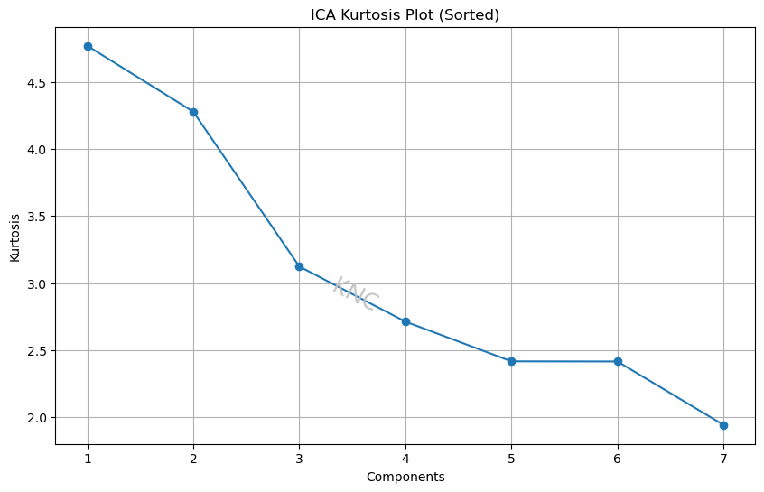
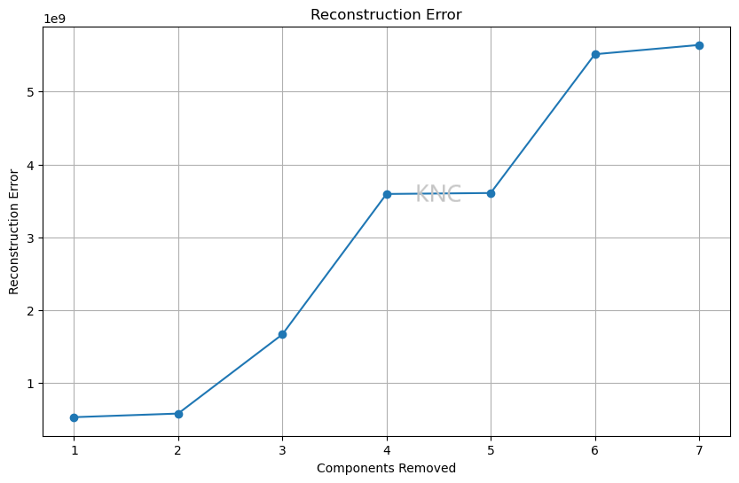

The Fundamentals of Dimensionality Reduction
This post explores dimensionality reduction. In particular, Principal Component Analysis (PCA), Independent Component Analysis (ICA), Random Projection (RP), and Locally Linear Embedding (LLE). The corresponding Scikit-learn implementations are the following: PCA, FastICA, GaussianRandomProjection, and LocallyLinearEmbedding [1].
The Importance of Dimensionality Reduction Algorithms
When training a supervised machine learning model, it is important to understand that the number of features can be exponentially related to the number of samples needed to converge. This means that reducing the number of features through feature selection, feature engineering, and dimensionality reduction becomes very important, especially when the number of samples available in a dataset are limited.
Common Dimensionality Reduction Algorithms
The goal of PCA is to find new basis vectors that best explain variance within a given dataset. Specifically, the new basis vectors are orthogonal, or uncorrelated, and they are chosen so that they maximize the variance in the dataset. In contrast, ICA attempts to find statistically independent components, and RP uses a random matrix. The advantage of something like RP is that it is much faster. Finally, manifold learning methods like Locally Linear Embedding (LLE) attempt to find low-dimensional structures and can be effective at finding non-linear relationships between variables.
Determining the Ideal Number of Components

For PCA, an explained variance ratio plot vased on eigenvalues can be effective at choosing the ideal number of components. While the appropriate threshold may vary, in the example below from a balanced subset of the UCI Covertype Dataset, the decided threshold was 90% explained variance. Using this threshold, it was determined that 5 components would be best. Additionally, the elbow point of an eigenvalue scree plot can be used as well to determine the number of components. It is important to note that if you have the same number of components as features, then the explained variance will be 100%. Additionally, it is also important to note that 100% explained variance is not perferred, since overfitting needs to be considered.
For ICA, a kurtosis plot can be used. For example, based on kurtosis plot elbows, a value of 5 was chosen for the same covertype dataset mentioned above because the kurtosis values for component numbers smaller than the dimension of the original dataset level off at this value. Using Pearson’s definition, a normal distribution has a kurtosis of 3. For the covertype dataset, 2 of the components have a kurtosis of over 4, meaning that these components are fairly non-Gaussian with longer tails and higher peaks. Therefore, the distributions in this dataset, particularly the first 2, have high kurtosis.
For RP and manifold learning, reconstruction error can be used. For the covertype dataset, the reconstruction error shown above indicates that 6 components is probably best. This is because the reconstruction error is lowest while still having less dimensions than the original dataset. Note that this plot shows the number of components on the x-axis, so as the number of components goes up, the reconstruction error goes down.
References
[1] Library Reference. Scikit-learn. https://scikit-learn.org/stable/
Author
Written by Kailey Cozart in September, 2024.